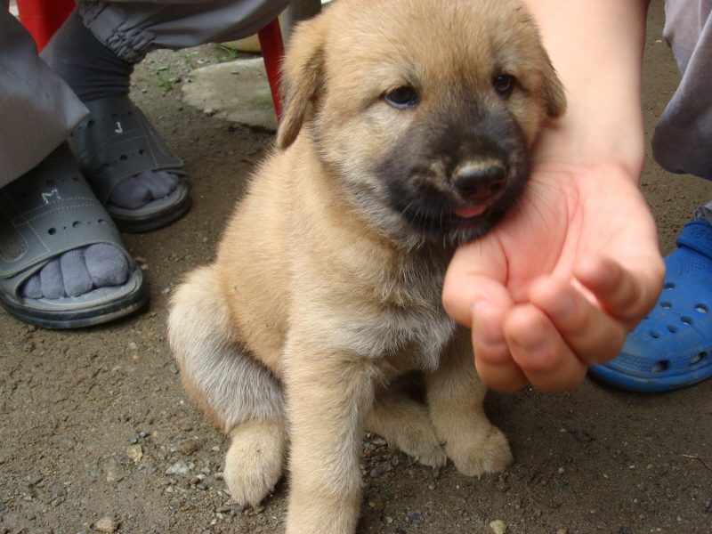

털 색이 누런색인 짐승을 부르는 이름. '누렇다'와 '-이'가 결합한 단어. 당연히 털 색이 흰색이면 흰둥이, 검은색이면 '검둥이'. 주로 소와 개에게 붙여진다. 토속적이고 정겨운 느낌의 구수한 이름에 이름짓기도 쉬워서 자주 애용된다. 지금은 주로 황구, 더 넓은 의미로는 시골 잡종을 귀엽게 부르는 애칭이 되었다.
개고기용으로 자주 이용되기도 하는데 예로부터 황구가 몸보신에 으뜸이라고 여겨졌기 때문. 해외에서는 아예 'Nureongi'라고 고유명사화까지 되었으며 한국의 견종 중 하나로 여겨질 정도다.